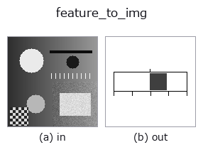

bridge op• Data kinds: feature → image
• Call: fullseye.apply(img, "feature_to_img", a=0.5, b=0.5) (the 2-D model is one image plus two scalar knobs a,b∈[0,1])

*The figure is the actual output on a synthetic 128×128 input. Left: input, right: output. Point clouds are drawn as a top-down scatter (brightness = z), 1-D series as a line plot, volumes as the maximum-intensity projection along z, videos as the middle frame, complex images as magnitude; return values that are not pictures are shown as the values themselves.*
Sweeping knob a (0.1 / 0.5 / 0.9, the other knob at its default):
▸ feature_to_img: knob a sweep (docs site)
Sweeping knob b (0.1 / 0.5 / 0.9, the other knob at its default):
▸ feature_to_img: knob b sweep (docs site)
Stages (the ops that come before → this op, left to right):
▸ feature_to_img: stages (docs site)
On other images (synthetic scene / photo / coins. Top row: inputs, bottom row: their outputs. Knobs at default):
▸ feature_to_img: other inputs (docs site)
Turns a scalar feature into a band with tick marks and back into an image — the sort for which, in the 2-D ledger, 125 ops produce it, yet not even 1 op could turn it into an image.
★It does not draw the numbers themselves. Burning in text would make the picture change with the typeface installed in the environment, breaking the contract that the same input gives the same pixels. What it draws is the position of the value, and the ticks (0, 1/4, 1/2, 3/4, 1) are the cues for reading it. If you need the numbers, pass them to annotate_table / annotate_leader (paper family).
• a → upper limit of the scale hi = 10 ** (4a - 2) (0.01 at a=0, 1.0 at a=0.5, 100 at a=1). Features vary widely in magnitude, so choose here the magnitude you want to see.
• b → how the ticks are laid out. b < 0.5 is one-sided [0, hi] (left end is 0), b >= 0.5 is two-sided [-hi, +hi] (the centre is 0; for signed quantities such as correlation and skewness).
• Values above the upper limit are clamped at the end (the bar pinned to the end = the cue that "the scale is too small"). ★NaN / Inf returns a blank sheet (distinguished from being pinned to the end).
• Returns: (128, 128) float64, on white ([0,1]).
• gallery2d_bridge family guide
• Sample-data catalog (download URLs / licences) — 2-D uses skimage.data (BSD/public domain) plus synthetic images; 3-D lists download URLs for real data sources (Stanford, PDS, …).
• Operator provenance and references — the sources of the research/methods this op family came from.
• The canonical algorithm (author, year) and its uses are named in the family usage guide above.
The program below has been verified to run (same input as the figure). In Studio's help this block becomes buttons that load and run it on the spot.
intensity 0.50 0.50 feature_to_img 0.50 0.50
▸ Load this pipeline · Load & run
• gallery2d_bridge — py -3.11 examples/gallery2d_bridge.py
image as input)identity · gaussian · mean_box · bilateral · unsharp · median · min_filter · max_filter
bridge)img_to_points · img_to_keypoints · img_to_signal · img_to_projection_profile · img_to_counts · img_to_matrix · img_to_video · img_to_volume
*Provenance: ops.py — 2D operator registry. This per-op note is generated by tools/opdocs.py md (do not hand-edit).*
© 2026 Kazufumi Furuse — Fullseye operator documentation. Licensed under Apache-2.0.